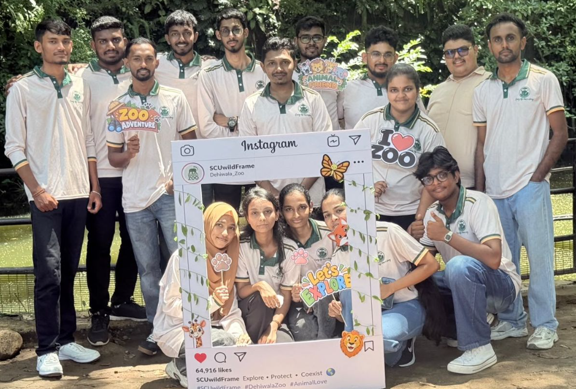
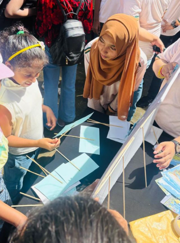
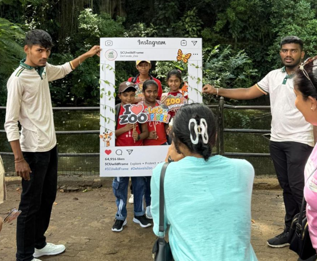
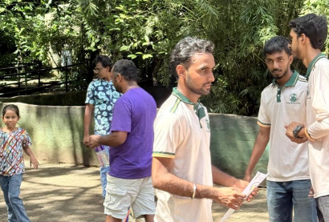
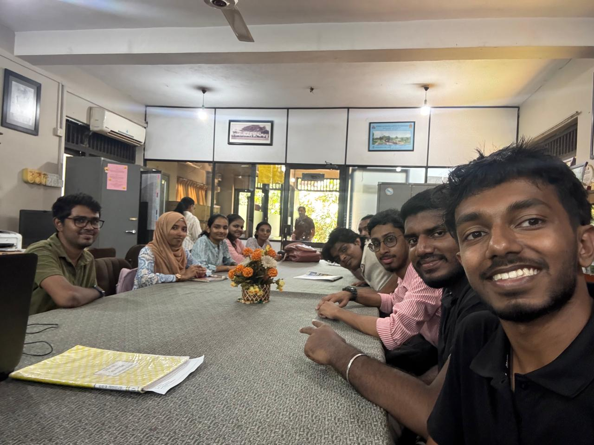
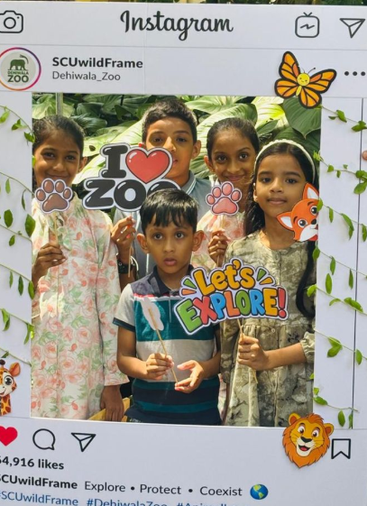

Zoo Awareness Program
Our group organised a wildlife awareness programme at the National Zoological Gardens in Dehiwala on 17 October 2026. The main objective was to educate visitors, especially children, about the importance of wildlife protection and conservation. We made the programme fun and interactive by organising educational games, a wildlife quiz, a photo frame activity and prizes to encourage participation.
Planning: the story
From the first visit to the event, the project took about two and a half months.
Initial visit
Visited the zoo to request permission to hold the program. No decision was given on the day, and we were advised to submit a formal letter.
Proposal accepted
The zoo accepted our proposal following the submission of the letter.
Meeting with the Director
Discussed the program with the Director, who asked the organising members to attend a briefing lecture at the zoo.
Briefing lecture
The organising members attended the lecture held at the zoo.
Preparation
Planned the games, purchased the gift packs, and designed the team jersey, banner and photo frame.
Formal proposal
Submitted the complete program proposal to the zoo.
Approval
Received official approval to proceed.
Final preparation
Printed all game materials and built the wildlife quiz in Google Forms.
Event day
Delivered the Zoo Awareness Program.
My contribution
I was in charge of requesting permission from parents and inviting children to the games. I also handled the quiz, which visitors took on their phones by scanning a QR code.
Activities
Digital wildlife quiz
A ten-question quiz taken by scanning a QR code, on animals, conservation and responsible behaviour. Scoring above 8 out of 10 earned a prize.
Food Chain game
Visitors arranged colourful picture cards in the correct order to build a food chain.
Dos and Don'ts Zoo Adventure
Picture boards showed behaviour that is and is not appropriate at a zoo, and children chose the right one.
Animal and habitat matching
Children matched animal cards with the habitats they live in.
Photo frame
A frame styled as a social media post, with the message “Explore · Protect · Coexist” and the hashtag #SCUWildFrame.
Banner and gifts
A banner in English, Sinhala and Tamil, and 65 gift packs for participants.
Photos from the event






Outcomes
All 65 gift packs went out very quickly.
People started engaging, and everyone seemed interested.
About 10 visitors tried the quiz, and those who scored above 8 out of 10 won a prize.
Visitors also used the photo frame to take photos.
Challenges and lessons
Plan for the weather
It rained until about 6:30 on the morning of the program, and we did not know whether we could go ahead. Next time I would prepare a backup plan, such as a sheltered spot or a later start.
Start preparing materials earlier
The games were printed and the quiz was built in the four days after approval, so finishing more of this earlier would have felt calmer.
Prepare more gift packs
Ours went out very quickly, so more would have reached more visitors.
Keep approvals and communication clear
It took several steps to get permission, so following up early and keeping the paperwork organised kept the project moving.
What I Learned
Organising the Zoo Awareness Programme was a valuable experience that helped me understand the importance of planning, teamwork and patience. From our first visit to the zoo on 30 July until receiving final approval on 13 October, we had to complete several steps, including submitting a formal letter, meeting the director and attending a lecture. On the event day, I was responsible for getting permission from parents, inviting children to participate and managing the wildlife quiz. Seeing children and families enjoy our activities and all 65 gift packs being distributed made me feel happy and proud of our team's efforts. The rainy weather that morning also taught me the importance of having a backup plan. Overall, this project helped me improve my communication, teamwork and organisational skills. I realised that a successful event requires proper preparation, cooperation and the ability to handle unexpected challenges.